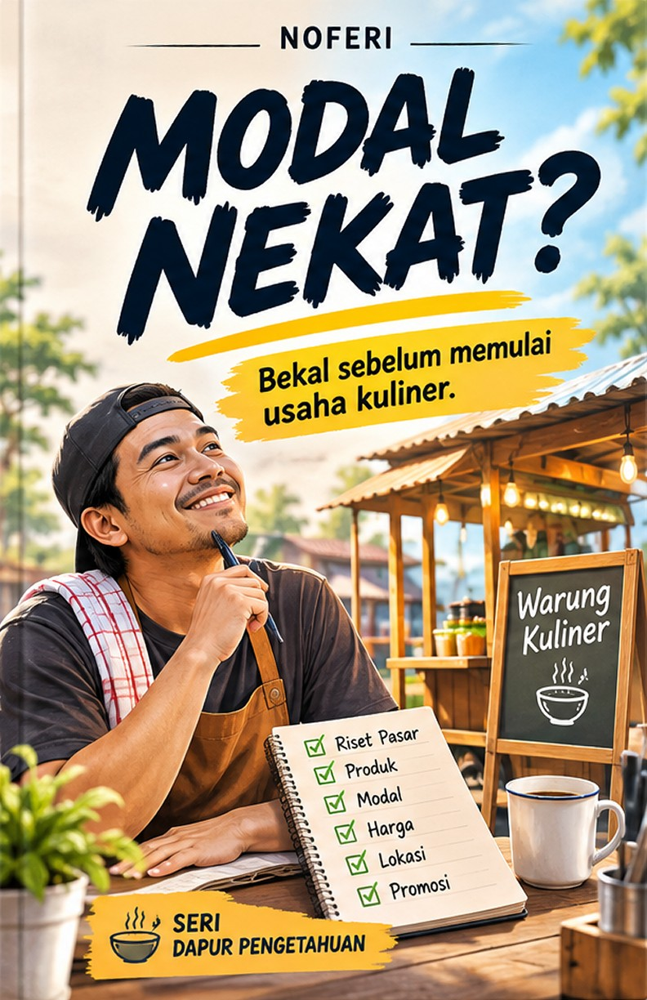
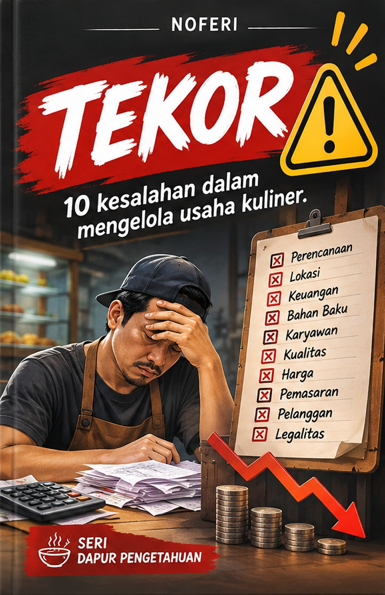

Pustaka Digital
Belajar, lalu berbagi.
Saya mengumpulkan banyak materi untuk belajar, dari usaha kuliner hingga teknologi dan AI. Sekarang saya ingin membagikan sebagian pengetahuan dan pengalaman itu. Semua buku di sini bisa dibaca gratis. Semoga bermanfaat.
Seri Dapur Pengetahuan · Noferi

Teknologi & AI
Dapur Vibe Coder
Catatan belajar dan praktik membangun produk digital dengan bantuan AI.
Baca Dapur Vibe CoderBuku ini berangkat dari pengalaman dan proses belajar. Jika menemukan kekeliruan, silakan sampaikan koreksi melalui kontak Linggau AI Studio.